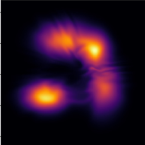
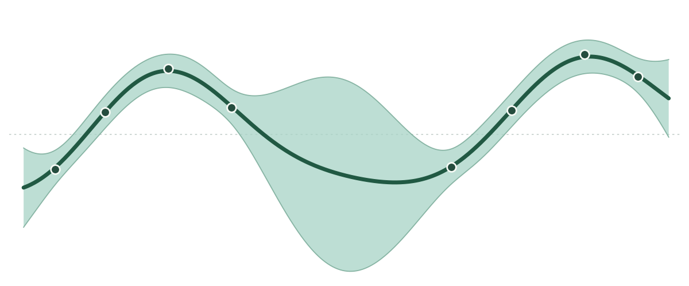

Yang et al. · Fig. 1 ↗About me
Hi, I’m Zi Yang, a PhD student at the University of Hong Kong, advised by Prof. Michael Minyi Zhang. I study Gaussian processes and kernel learning, with a particular interest in applying these methods to large language models.
Research interests
- Gaussian processes
- Nonstationary kernels
- Multi-view learning
- Attention mechanisms
- Bayesian nonparametrics
Gaussian process regression
The shaded band shows how uncertain the model is between observations.

Mean95% credible bandObservation
News
Our paper D²PO appeared in the ACM Multimedia proceedings.
Our NeurIPS papers on spectral kernel attention and continuous-depth Gaussian processes are available on arXiv.
Our multi-output Gaussian process paper was part of the ICLR poster program.
Selected publications
Google ScholarEqual contribution
2026 4 papers

2025 1 paper
Submitted manuscripts
Equal contribution
Education
- PhD
The University of Hong Kong
PhD student, School of Computing and Data Science
Jan 2024 – present - MSc
University College London
Statistics · Distinction
2023 - BSc
University of Liverpool
Mathematics (Hons) · First Class
2022